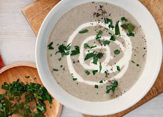

Welcome to my favourites!
These are the recipes our family likes and cooks frequently.
Feel free to try them and leave a comment by the recipes, if you have any.
This week's menu

Ingredients
- 1 cup cashew nuts
- 2½ tablespoons macadamia oil
- 2 yellow onions, coarsely chopped
- fresh coriander leaves, to serve
- 2½ lbs carrots, coarsely chopped
- pinch cayenne pepper, or to taste
- 3 inch piece fresh ginger, finely chopped
Method
- Rinse the cashews under cold running water and drain. Place in a bowl and pour over enough water to cover, then set aside and soak overnight. Drain well.
- Heat the macadamia oil in a large saucepan over medium–high heat. Add the onion and ginger and cook for about 5 minutes, or until the onion softens. Add the cashews, carrots and 6 cups water. Bring to a boil, then reduce the heat to medium–low and simmer, uncovered, for about 15 minutes, or until the carrots are tender. Stir in the cayenne pepper, then remove from the heat and allow to cool slightly.
- Transfer the soup to a food processor or blender and process, in batches, until smooth. Return the soup to the pan over medium heat until heated through. Serve topped with the coriander leaves.
~

Jamie's Perfect Mushroom Risotto
Ingredients
- 1 small onion , peeled and finely chopped
- 2 sticks celery , trimmed and finely chopped
- 400 g risotto rice
- 75 ml vermouth or white wine
- sea salt
- freshly ground black pepper
- 4 large handfuls wild mushrooms (try shiitake, girolle, chestnut or oyster), cleaned and sliced
- a few sprigs fresh chervil, tarragon or parsley , leaves picked and chopped
- 1 lemon , juice of
- 1 teaspoon butter
- olive oil
- extra virgin olive oil
- 1.5 litres organic chicken or vegetable stock, hot
- 1 handful dried porcini mushrooms
- 1 small handful Parmesan cheese , freshly grated, plus extra for serving
Method
- A mushroom risotto can be taken in many different ways, depending on what kind of mushrooms you have and whether they are introduced at the very beginning of cooking or just added at the end, as I’m going to do here. The inspiration for this recipe came when I was in Japan and saw mushrooms being cooked completely dry on a barbecue or griddle pan. This way of cooking brings out a really fresh and nutty flavour in them; perfect for being dressed lightly with olive oil, salt and lemon juice or stirred into a risotto at the last minute before serving.
- Heat your stock in a saucepan and keep it on a low simmer. Place the porcini mushrooms in a bowl and pour in just enough hot stock to cover. Leave for a couple of minutes until they’ve softened. Fish them out of the stock and chop them, reserving the soaking liquid.
- In a large pan, heat a lug of olive oil and add the onion and celery. Slowly fry without colouring them for at least 10 minutes, then turn the heat up and add the rice. Give it a stir. Stir in the vermouth or wine – it’ll smell fantastic! Keep stirring until the liquid has cooked into the rice. Now pour the porcini soaking liquid through a sieve into the pan and add the chopped porcini, a good pinch of salt and your first ladle of hot stock. Turn the heat down to a simmer and keep adding ladlefuls of stock, stirring and massaging the starch out of the rice, allowing each ladleful to be absorbed before adding the next.
- Carry on adding stock until the rice is soft but with a slight bite. This will take about 30 minutes. Meanwhile, get a dry griddle pan hot and grill the wild mushrooms until soft. If your pan isn’t big enough, do this in batches. Put them into a bowl and add the chopped herbs, a pinch of salt and the lemon juice. Using your hands, get stuck in and toss everything together – this is going to be incredible!
- Take the risotto off the heat and check the seasoning carefully. Stir in the butter and the Parmesan. You want it to be creamy and oozy in texture, so add a bit more stock if you think it needs it. Put a lid on and leave the risotto to relax for about 3 minutes.
- Take your risotto and add a little more seasoning or Parmesan if you like. Serve a good dollop of risotto topped with some grilled dressed mushrooms, a sprinkling of freshly grated Parmesan and a drizzle of extra virgin olive oil.
~
Ingredients
- 225 g soft butter
- 225 g light muscovado or light brown sugar
- 3 medium eggs
- 100 g walnut pieces, chopped
- 100 g sultanas
- 225 g self-raising flour
- 2 tsp baking powder
- 400 g cooking apples, peeled, cored and grated
- 1 tsp ground cinnamon
- light muscovado sugar for sprinkling
- extra chopped walnuts for sprinkling (optional)
- icing sugar for dusting (optional)
Method
- Preheat the oven to 180 degrees C. Lightly grease and base line a 9 inch (23 cm) deep round cake tin with greased greaseproof paper.
- Measure the margarine, sugar, eggs, chopped walnuts, sultanas, flour and baking powder into a large bowl and beat well for about 2 minutes until thoroughly blended.
- Spoon half the mixture into the prepared tin then spread the grated apple and ground cinnamon in an even layer on top. (I fancied a nice layer of apple so I thinly sliced the apple instead of grating it, but its down to personal preference)
- Spread the remaining cake mixture on top, level the surface then sprinkle generously with light muscovado sugar and walnuts.
- Bake in the pre-heated oven for about 1 1/4 – 1 1/2 hours or until the cake is well risen and golden brown (mine was cooked after 1 hour).
- Remove from the oven and leave to cool in the tin for a few minutes before turning out and leaving to cool completely on a wire rack.
- Dust with icing sugar to serve.
Breakfast
Ingredients
- knob of butter
- 2 slices white bread
- ½ ripe avocado
- ½ lemon, plus a wedge to serve
- handful watercress
- 1 large egg
- few slices smoked salmon
Method
- Heat a large frying pan over a medium heat. Butter both sides of each slice of bread, then cut a large heart (or circle) out of the centre of one slice using a knife or biscuit cutter. Place the slices of bread, including the cut-out piece, into the frying pan and cook for 2 mins until golden. While the bread is cooking, slice the avocado and squeeze over the lemon juice. Toss the watercress in a little lemon juice, too.
- Flip the bread over, then crack the egg into the cut-out hole. After 1-2 mins, the whole slice of bread and cut-out piece should be golden brown on both sides. Transfer to a plate (eat the cut-out as a chef’s perk, if you like!). Cover the pan with a lid, or some foil, and lower the heat. Continue cooking for a further 1-2 mins until the egg is done to your liking.
- Top the toasted slice of bread with the avocado, smoked salmon and watercress, and season with a twist of pepper. Put the egg-in-the-hole slice on top and serve with an extra wedge of lemon, if you like.
~
Ingredients
- 600 g potato, diced
- 1 Cal cooking spray, for frying
- 2 leeks, trimmed, washed and sliced
- 175 g lean ham, weighed after trimming and discarding any fat, chopped
- 2 tbsp wholegrain mustard
- 5 eggs
- 2 x 415g cans reduced sugar & salt baked beans
Method
- Bring a large pan of salted water to the boil. Add the potatoes and boil for 5 mins until just tender. Drain well and leave in the colander to steam-dry.
- Meanwhile, spray an ovenproof pan with cooking spray. Add the leeks with a splash of water and fry until very soft and squishy. Add a few more sprays of the oil, tip in the potatoes along with the ham, and fry to crisp up a little. Heat oven to 200C/180C fan/gas 6.
- Stir in the mustard, 1 egg and a good amount of seasoning with a fork – break up some of the potatoes roughly as you do. Flatten down the mixture, spray the top with oil, and bake in the oven for 15-20 mins until the top is crisp.
- When the hash is nearly ready, heat 200ml water in a non-stick frying pan with a lid (or use a baking sheet as a lid). When it is steaming (but before it simmers), crack in the remaining 4 eggs and cover with a lid. Cook for 2-4 mins until the eggs are done to your liking. Meanwhile, heat the beans.
- Lift an egg onto each plate, add a big scoop of hash and spoon on some beans.
~
Ingredients
- 3 tbsp vegetable oil, plus extra for the tin
- 2 large, very ripe banana
- 1 large egg, beaten
- 70 g light brown soft sugar
- 250 g nutty muesli
- 100 g tropical dried fruit mix
Method
- Heat the oven to 180C/160C fan/gas 4. Lightly oil and line a 20cm deep square tin with baking parchment.
- Mash the bananas in a bowl until smooth, then stir through the oil, egg and sugar. Fold through the muesli, most of the tropical mix and a pinch of salt. Spoon the mixture into the tin and sprinkle with the remaining tropical mix. Bake for 35-40 mins, leave to cool in the tin, then turn out on to a board and slice into 10 bars. Will keep in an airtight container for four days.
~

Ingredients
- 100 g baby spinach, roughly chopped
- 4 tbsp fresh pesto
- 100 ml double cream
- 1 tbsp finely grated gruyère (or vegetarian alternative)
- 4 medium eggs
Method
- Heat oven to 200C/180C fan/gas 6. Mix together the spinach, pesto, cream and some seasoning, and tip into 2 individual shallow ovenproof dishes. Sprinkle the cheese over the top. Make 2 shallow hollows in the mixture in each dish and break an egg into each hollow. Bake in the oven for 10-12 mins until the whites are set and the yolks are still runny.
~

Ingredients
- 8 ripe figs
- ¼ teaspoon cinnamon
- 4 tablespoons fresh unsweetened orange juice
- 4 tablespoons runny honey
- 150 g blackberries
- 600 g Greek yoghurt
- 4 tablespoons granola
- 2 tabelspoons unsalted pistachio nuts
Method
- Preheat the oven to 200ºC/400ºF/gas 6.
- Halve the figs and arrange cut-side up on a lined non-stick baking tray, so that they fit snugly.
- In a small bowl, whisk the cinnamon, orange juice and honey until combined, then spoon over the figs. Roast in the oven for 15 minutes, or until tender and sticky.
- Scatter the blackberries over the figs and return to the oven for a final 2 to 3 minutes.
- Divide the yoghurt between four breakfast pots or bowls. Top with the roasted fruit, reserving the juices in the tray.
- Scatter the granola and pistachios over the pots and drizzle with the reserved juices to finish.
Soups
Ingredients
- 1 cup cashew nuts
- 2½ tablespoons macadamia oil
- 2 yellow onions, coarsely chopped
- 3 inch piece fresh ginger, finely chopped
- 2½ lbs carrots, coarsely chopped
- pinch cayenne pepper, or to taste
- fresh coriander leaves, to serve
Method
- Rinse the cashews under cold running water and drain. Place in a bowl and pour over enough water to cover, then set aside and soak overnight. Drain well.
- Heat the macadamia oil in a large saucepan over medium–high heat. Add the onion and ginger and cook for about 5 minutes, or until the onion softens. Add the cashews, carrots and 6 cups water. Bring to a boil, then reduce the heat to medium–low and simmer, uncovered, for about 15 minutes, or until the carrots are tender. Stir in the cayenne pepper, then remove from the heat and allow to cool slightly.
- Transfer the soup to a food processor or blender and process, in batches, until smooth. Return the soup to the pan over medium heat until heated through. Serve topped with the coriander leaves.
~

Ingredients
- 2 tsp cumin seeds
- pinch chilli flakes
- 2 tbsp olive oil
- 600 g carrots, washed and coarsely grated (no need to peel)
- 140 g split red lentils
- 1 l hot vegetable stock (from a cube is fine)
- 125 ml milk
- plain yogurt and naan bread, to serve
Method
- Heat a large saucepan and dry-fry 2 tsp cumin seeds and a pinch of chilli flakes for 1 min, or until they start to jump around the pan and release their aromas
- Scoop out about half with a spoon and set aside. Add 2 tbsp olive oil, 600g coarsely grated carrots, 140g split red lentils, 1l hot vegetable stock and 125ml milk to the pan and bring to the boil.
- Simmer for 15 mins until the lentils have swollen and softened.
- Whizz the soup with a stick blender or in a food processor until smooth (or leave it chunky if you prefer).
- Season to taste and finish with a dollop of plain yogurt and a sprinkling of the reserved toasted spices. Serve with warmed naan breads.
~

Mushroom soup
Ingredients
- 90 g butter
- 2 medium onions, roughly chopped
- 1 garlic clove, crushed
- 500 g mushrooms, finely chopped (chestnut or button mushrooms work well)
- 2 tbsp plain flour
- 1 l hot chicken stock
- 1 bay leaf
- 4 tbsp single cream
- small handful flat-leaf parsley, roughly chopped, to serve (optional)
Method
- Heat the butter in a large saucepan and cook the onions and garlic until soft but not browned, about 8-10 mins.
- Add the mushrooms and cook over a high heat for another 3 mins until softened. Sprinkle over the flour and stir to combine. Pour in the chicken stock, bring the mixture to the boil, then add the bay leaf and simmer for another 10 mins
- Remove and discard the bay leaf, then remove the mushroom mixture from the heat and blitz using a hand blender until smooth. Gently reheat the soup and stir through the cream (or, you could freeze the soup at this stage – simply stir through the cream when heating). Scatter over the parsley, if you like, and serve.
~
Ingredients
- 1 tbsp olive oil
- 1 garlic clove, chopped
- 250 ml chicken or vegetable stock (more if necessary)
- 200 g broccoli florets
- salt and freshly ground black pepper
- drizzle cream, to serve
Method
- Heat the oil in a saucepan and fry the garlic for 1-2 minutes.
- Pour the chicken or vegetable stock into the pan and add the broccoli florets.
- Bring to the boil and reduce the heat and simmer gently for 10-12 minutes, until the broccoli is tender.
- Season with salt and pepper, then transfer to a liquidizer. Blend until smooth.
- Ladle the soup into serving bowls and drizzle with cream to serve.
~

Ingredients
- 1 whole chicken, about 1.5 kg, cut into parts
- about 2.5 liter cold water
- 3-4 medium carrots
- 2-3 parsley roots
- 1 celery root
- 1 kohlrabi
- 3-4 cauliflower florets
- some savoy cabbage leaves
- 1 tomato
- 1 green (hot) pepper
- 1 onion
- 2 cloves of garlic
- 1 bunch of fresh parsley (plus more, chopped for serving)
- 2 tbsp salt
- 1 tbsp black peppercorns
- ½ tsp paprika
- 300 g vermicelli egg noodles (“cérnametélt” in Hungarian)
Method
- Place a large pot with about 2.5 liter cold water on medium heat and add the chicken pieces (legs, breast, wings legs and back – cut into half).
- Let it cook on medium-low heat until some foam appears on the surface.
- Skim the foam off with a ladle or you can use a strainer too.
- Continue to cook the soup on medium-low heat, uncovered.
- Meanwhile peel all the vegetables. I usually leave some skin on the onion – it gives a nice golden color to the soup.
- Cut the carrots and parsley root in half, then halve them again lengthwise. (no need to halve the thinner ends). Cut the celery root in half and quarter the kohlrabi.
- Put all the vegetables (carrots, parsley roots, kohlrabi, celery root, onion, garlic cloves, cauliflower florets, savoy cabbage leaves and a bunch of parsley) into the soup. For more flavour add one tomato and a green (hot) pepper too.
- Season the soup with salt, black peppercorns and a little bit of paprika.
- Bring the soup to a boil then cook on low heat, uncovered for about 2 hours.
- Meanwhile cook the vermicelli egg noodles (or other kind of soup pasta) in boiling salted water – according to the packet instruction. Then drain and rinse with cold water to prevent sticking. Put it into a bow and set aside.
- After about 2 hours of cooking remove the pot from the heat. Discard the vegetables you're not going to eat (e.g.: savoy cabbage leaves, celery root, onion, tomato, green pepper, parsley).
- Carefully remove the remaining vegetables which will be served with the soup.
- Remove the chicken pieces too and place them into a separate bowl.
- Put a sieve over a pot and place a cheesecloth into it. Ladle the broth through it, then remove the sieve with the cheesecloth – now, you have a clean, golden soup, which is ready to serve.
- ut some chicken meat, vegetables and noodles into a bowl and ladle some hot soup over it. Sprinkle with chopped parsley and season with freshly ground black pepper. (you can also add some dried hot chili to the soup – if you prefer.)
Vegetarian Recipes

Ingredients
- 1 red onion
- 100 g red lentils
- 1 aubergine
- 3 garlic cloves
- 15 g fresh root ginger
- 1 tbsp curry powder
- 5 g coriander
- 1 vegetable stock cube
- 1 coconut yoghurt pot (80 g)
- 1 can of green lentils (400 g)
- 1 tbsp ground cumin
Method
- Preheat the oven to 220°C/ 200°C (fan)/ 425°F/ Gas 7. Cut the aubergine[s] into quarters lengthways, then slice into big pieces. Rub the chopped aubergine with a drizzle of olive oil and the ground cumin, then season generously with salt
- Heat a large, wide-based pan (preferably non-stick) with a drizzle of olive oil over a high heat. Once hot, add the aubergine and cook for 1 min each side or until browned. Transfer the browned aubergine to a baking tray (use tin foil to avoid mess) and put it in the oven for 20-25 min or until cooked through (reserve the pan for later!) - this is your spiced aubergine
- While the aubergine is cooking, boil a kettle. Peel and finely chop (or grate) the garlic. Peel the ginger (scrape the skin off with a teaspoon) and finely chop (or grate). Peel and dice the red onion[s]
- Return the pan to a medium heat with a drizzle of olive oil. Once hot, add the diced onion with a pinch of salt. Cook for 5 min or until softened. Add the chopped ginger and garlic and the curry powder and cook for a further 3 min
- Rinse the red lentils in a sieve under the cold tap. Add the red lentils and canned lentils (no need to drain) to the softened onion. Dissolve the vegetable stock cube[s] in 350 ml [550 ml] boiled water. Add the stock to the lentils and stir for 10-15 min or until all the water is absorbed and the lentils are tender and porridge-like in consistency
- Meanwhile, chop the coriander finely, including the stalks.
- Once the lentils are cooked, remove them from the heat and stir in 2/3 of the coconut yoghurt and 2/3 of the chopped coriander (you'll use the rest for garnish) – this is your two-lentil dal. Season generously with salt and pepper. Serve the two-lentil dal in bowls and top with the spiced aubergine. Garnish with the remaining chopped coriander and a dollop of the remaining coconut yoghurt
~

Ingredients
- 1 red onion
- 30 g sultanas
- 1 cauliflower
- 1 tbsp curry powder
- 80 g trimmed fine green beans
- 5 g coriander
- 130 g basmati rice
- 1 vegetable stock cube
- 80 g coconut yoghurt
- 16 g tomato paste
Method
- Peel and finely dice the red onion. Cut the cauliflower into small florets. Heat a large, wide-based pan (preferably non-stick with a matching lid), with 2 tbsp vegetable oil over a high heat.
- Once the pan is hot, add the diced onion, cauliflower, curry powder and a pinch of salt and pepper. Cook for 5 min or until starting to soften.
- Crumble the vegetable stock cube into the pan and add the tomato paste. Tip: Add a drizzle of oil if the pan looks a little dry
- Cook for a further 2 min or until the cauliflower is starting to colour. Transfer the contents of the pan to a bowl and set aside (reserve the pan for later) – this is your cauliflower mixture
- Return the reserved pan to a high heat, add the basmati rice and stir to coat the grains in the remaining oil. Add 350ml water and bring to the boil over a high heat. Meanwhile, cut the green beans in half.
- Return the cauliflower mixture back to the pan. Add the green beans and sultanas.
- Reduce the heat to medium-low and cook, covered for 10-12 min or until the water has absorbed and the rice is cooked – this is your vegetable biryani. Tip: Add a little water if the rice is not cooked or the mixture is looking a little dry. Meanwhile, chop the coriander roughly, including the stalks.
- Check that the rice is tender, then taste for seasoning, adding more salt and pepper if needed. Serve the vegetable biryani with a dollop of coconut yoghurt and garnish with the chopped coriander.
~

Ingredients
- 20 g basil
- 50 g baby leaf salad
- 15 ml white wine vinegar
- 18 g dijon mustard
- 100 g soft goats' cheese
- 2 rosemary & sea salt focaccia
- 250 g chestnut mushrooms
Method
- Preheat the oven to 220°C/ 200°C (fan)/ 425°F/ Gas 7. Heat a large, wide-based pan (preferably non-stick) with a drizzle of vegetable oil over a high heat. Rip the focaccia into rough bite-sized pieces.
- Add the ripped focaccia to a baking tray with a drizzle of olive oil and a pinch of salt. Put the tray in the oven for 5-6 min or until lightly crisp – these are your focaccia croutons.
- Meanwhile, crumble the chestnut mushrooms into the pan. Season with a pinch of salt and pepper and cook for 5 min or until golden and softened – these are your caramelised mushrooms. Tip: Try not to stir the mushrooms too often, as this will stop them from caramelising!
- While the chestnut mushrooms soften, chop the basil finely, including the stalks.
- Combine the chopped basil with the Dijon mustard, white wine vinegar, 3 tbsp olive oil and 2 tbsp cold water. Season with a pinch of salt, pepper and sugar and stir it all together – this is your basil dressing
- Crumble the goats' cheese into rough bite-sized pieces.
- Serve the focaccia croutons, caramelised mushrooms and crumbled goats' cheese over the baby leaf salad. Drizzle over the basil dressing and let everyone dig in.
~

Ingredients
- 80 g chestnut mushrooms
- 2 garlic cloves
- 40 g basil
- 80 g mature cheddar
- 30 g 3 seed mix
- 150 g portobello mushrooms
- 200 g linguine
Method
- Preheat the grill to a high heat, then boil a kettle. Rip the portobello and chestnut mushrooms into bite-sized pieces onto a baking tray, drizzle with olive oil then season generously with salt and pepper. Put the tray directly under the grill and cook for 12-15 min or until they're nicely caramelised
- Add the 3 seed mix to a large pot over a high heat and cook for 1-2 min or until toasted. Once toasted, set aside on a plate and keep the pot for later
- Return the pot to a high heat. Add the linguine with plenty of boiled water with a pinch of salt, bring to the boil over a high heat and cook for 8-12 min or until cooked with a slight bite. Once cooked, drain and reserve a cup of the starchy cooking water
- Meanwhile, peel and finely chop (or grate) the garlic. Chop the basil finely, including the stalks. Grate the cheddar cheese finely
- Grind the chopped basil, chopped garlic and a pinch of salt in a pestle & mortar to form a smooth paste. Add 2-3 tbsp olive oil and mix well. Tip: if you don't have a pestle and mortar, chop the basil very finely, then mix with olive oil.
- Add the grated cheese to the basil with 2-3 tbsp olive oil. Season with a generous pinch of salt and pepper and mix thoroughly – this is your pesto
- Return the drained linguine to the pot with a splash of your reserved starchy cooking water. Stir the pesto and half of the caramelised mushrooms through and cook for 1 min or until the pesto has coated the pasta and the cheese has melted. Top with the remaining caramelised mushrooms
~

Ingredients
- 140 g baby leaf lettuce (baby spinach, baby romaine etc.,)
- 128 g sliced red cabbage
- 64 g blueberries
- 220 g goat cheese
- 2 tbsp black sesame seeds or white sesame seeds
- 2 tbsp hemp seeds
- 2 tbsp dried cranberries
- 2 tbsp olive oil
- 1 tbsp sesame oil
- 1 tbsp balsamic vinegar
- 1 tbsp tahini
- 1/2 tbsp honey
- sea salt, pepper
Method
- Finely chop dried cranberries and add to a small bowl. Add sesame seeds and hemp seeds and mix well.
- ake about 1/2 Tbsp of goat cheese into your hands and roll between your palms until a ball forms, then roll goat cheese ball in seed mix and place on a plate. Repeat until all goat cheese is in balls.
- Heat a non-stick pan over very low heat.
- For the dressing, add sesame oil, tahini, 1 Tbsp honey, balsamic vinegar and 2 Tbsp olive oil to a mason jar and shake until well combined.
- Wash salad leafs if necessary and finely slice cabbage if not done already.
- Once pan is very hot, add 1 Tbsp olive oil and 1/2 Tbsp honey, stir well, then add seeded goat cheese balls. Constantly move around with a silicone spatula and when they start to lose shape immediately remove from pan and place on a plate.
- Add salad leafs and cabbage strings to salad bowl, scatter blueberries on top and add goat cheese balls on top.
- Add salad dressing right before serving.
Fish

Ingredients
- 2 sea bass, 1.25 kg in total (or use 4 small ones, about 300 g each), scaled and cleaned
- 2 small fennel bulbs, fronds reserved
- 3 tbsp small capers, drained and rinsed
- 1 lemon, sliced
- 2 dill sprigs
- 25 g butter
- olive oil
- 100 ml white wine
- sea salt and freshly ground black pepper
Method
- Preheat the oven to 200°C/Gas 6.
- Season the fish really well inside and out. Finely slice the fennel and place, along with some fronds, inside the sea bass stomach cavity. Sprinkle in the capers and line the lemon slices on top of the fennel inside the cavity. Top with the dill and dot over the butter in small pieces.
- Drizzle the fish with a little olive oil and then wrap in foil. Pour the wine into the parcel just before you close up the last corner and make sure the parcel is well sealed, wrapping it in a second piece of foil if necessary.
- Place the parcel on a roasting tray and bake in the oven – about 20 minutes for the 600 g fish, or 8–10 minutes if using the smaller ones – until the fish is just cooked through with the flesh flaking away from the bone.
- Remove from the oven and leave to rest for a few minutes before serving (be careful of the hot steam when you unwrap the foil). Serve sprinkled with the reserved fennel fronds.
~

Ingredients
- 200 g puy lentils
- 1 bay leaf
- 2 thyme sprigs
- 800 ml vegetable stock (or water)
- 1 tbsp olive oil
- 200 g chestnut mushrooms, cut into eighths
- 200 g large flat or portobello mushrooms, sliced
- 2 garlic cloves, peeled and finely chopped
- 4 x 100 g wild salmon fillets
- 100 g rocket leaves
- sea salt and freshly ground black pepper
Method
- Put the lentils into a large saucepan along with the bay leaf, thyme and stock (or water). Bring to the boil over a medium-high heat, then reduce to a simmer. Simmer for 15–20 minutes until tender.
- In the meantime, heat a large heavy-based frying pan over a medium-high heat and add the olive oil. Once hot, add the mushrooms with a pinch of salt and cook in the pan for 6–8 minutes, stirring now and again, until soft and lightly caramelized on the edges.
- Add the chopped garlic and continue to cook for 2 minutes, then remove the pan from the heat.
- Once the lentils are tender, drain well and discard the herbs. Put the lentils into a large mixing bowl and add the mushrooms. Mix together gently to avoid breaking up the lentils too much.
- To make the dressing, put all the ingredients into a clean jam jar with a pinch of salt and pepper. Close the lid of the jar and shake until the dressing comes together and emulsifies.
- Preheat the grill to high. Grill the salmon for 6–8 minutes to your liking.
- Pour half the dressing over the warm lentils and toss gently to ensure everything is coated. Fold in the rocket, place the salmon on top and pour over the remaining dressing. Serve immediately.